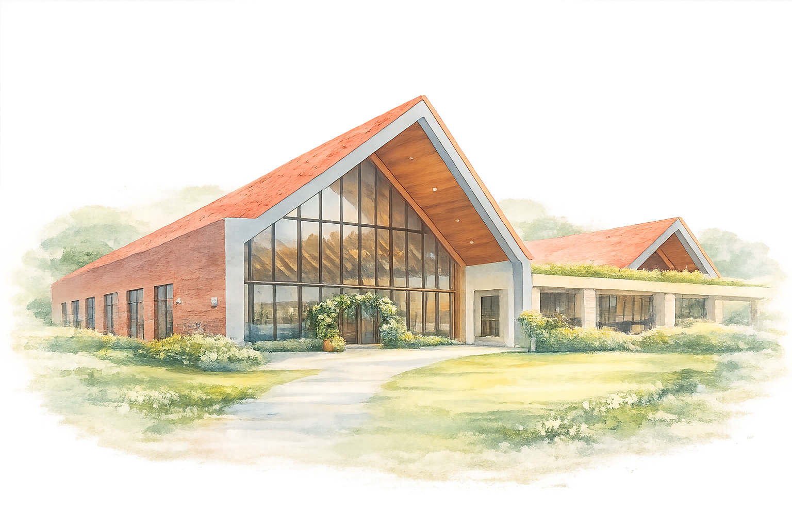

Together with their families
Ten years. One more day.
joyfully request the honour of your presence as they exchange vows and celebrate the start of forever
Friday · January 8, 2027 · Lipa, Batangas
St. Therese of the Child Jesus and the Holy Face Parish Church
two o’clock in the afternoon
Lipa, Batangas

Casa 10 22
four o’clock in the afternoon
Lipa, Batangas